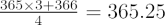
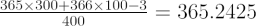

In most calendar systems, the length of the year is given in multiples of 24-hour days. Unfortunately, the orbital period of the Earth is not an exact multiple of days: one tropical year = 365.24219 days. Over time, the dates of the solstices, equinoxes and the seasons drift out of step with the expected calendar dates. With a standard calendar year lasting for 365 days, leap years of 366 days are used in both the Julian Calendar and the Gregorian Calendar in order to better approximate the true length of the tropical year.
In 46 BC, the Roman astronomer Sisogenes proposed a modification that would bring calendar dates and observations back into step. According to the Julian Calendar, a standard year has 365 days, but every fourth year there is a leap year of 366 days. The average length of the year is then

daysCloser to the tropical year, but still with a drift of about 8 days every 1000 years.
To stem the drift even further, Pope Gregory XIII modified the definition of leap years in 1582. In the Gregorian calander, only century years (e.g. 1600, 1700, 1800) which are exactly divisible by 400 are leap years. So, 1600, 2000 and 2400 are leap years, but 1900 and 2100 are not. The average length of a year in the Gregorian Calendar is:

daysWhich is accurate to about one day in 3000 years.